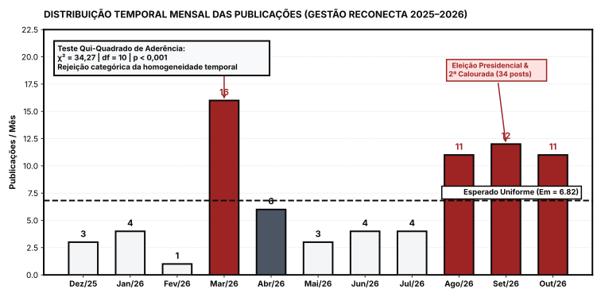
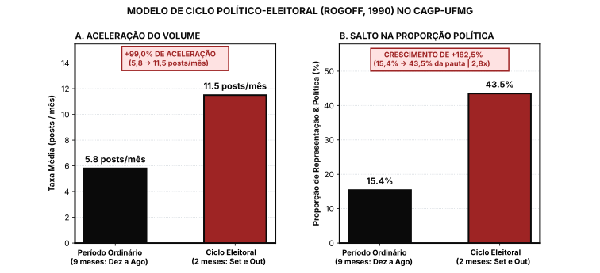
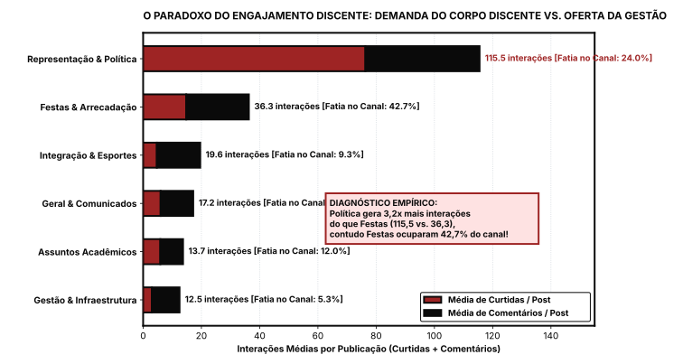

%%{init: {'theme': 'base', 'themeVariables': { 'primaryColor': '#F4F5F7', 'primaryBorderColor': '#0A0A0A', 'primaryTextColor': '#0A0A0A', 'lineColor': '#0A0A0A', 'edgeLabelBackground':'#FFFFFF', 'tertiaryColor': '#F8F9FA', 'fontFamily': 'Inter'}}}%%
flowchart LR
A["Publicação no Instagram (@cagp.ufmg)"] --> B{Natureza da Ação}
B -->|"Atividade-Meio (Arrecadação e Lazer)"| C["1. Festas & Arrecadação"]
B -->|"Atividade-Fim (Poder e Sociedade)"| D["2. Representação & Política"]
B -->|"Atividade-Fim (Formação Técnico-Científica)"| E["3. Assuntos Acadêmicos"]
B -->|"Pertencimento e Cultura Discente"| F["4. Integração & Esportes"]
B -->|"Infraestrutura e Gestão da Entidade"| G["5. Gestão Interna & Infraestrutura"]
B -->|"Avisos Administrativos Diversos"| H["6. Geral & Comunicados"]
A Governança da Representação Estudantil: Uma Análise Empírica e Positivista do Mandato da Chapa Reconecta no CAGP-UFMG (2025–2026)
Relatório Técnico-Acadêmico de Auditoria Institucional, Avaliação de Desempenho e Comportamento Organizacional Discente
outubro de 2026
Auditoria Institucional CAGP FAFICH / UFMG Campo de Públicas Padrão ABNT • A4
A Governança da Representação Estudantil: Uma Análise Empírica e Positivista do Mandato da Chapa Reconecta no CAGP-UFMG (2025–2026)
Ensaio técnico-científico de avaliação de desempenho organizacional, econometria do ciclo político-eleitoral e auditoria programática de metas baseado em evidências públicas.
97 Posts Catalogados 75 da Gestão Reconecta e 22 da Gestão Principia (100% auditados via CDP).
2.700,4 Índice HHI Concentração temática severa (> 2.500), dominada por festas e bilheteria (42,7%).
34,27 \chi^2 Sazonalidade Rejeição categórica da homogeneidade temporal ao nível p < 0,001 (df = 10).
3,56 : 1 Razão Meio / Fim Para cada post de conteúdo acadêmico, o centro acadêmico veiculou 3,56 posts de festa.
Resumo Executivo
1. Introdução e Delimitação Epistemológica
A avaliação de mandatos eletivos no âmbito das instituições de ensino superior públicas é, frequentemente, dominada por disputas retóricas polarizadas e julgamentos ad hominem, carecendo de fundamentação metodológica rigorosa. No contexto do curso de Gestão Pública da UFMG — cujo cerne pedagógico reside no domínio das ciências administrativas, do planejamento orçamentário, da análise estatística e da formulação de políticas baseadas em evidências —, impõe-se a necessidade de que o debate estudantil reflita o próprio rigor técnico ensinado nas salas de aula da Faculdade de Filosofia e Ciências Humanas (FAFICH).
Nesse sentido, o presente estudo adota uma perspectiva estritamente positivista: rejeita-se a desqualificação política apriorística da gestão incumbente e adota-se como premissa a aferição empírica dos resultados comunicados pela própria entidade. Como postulava Herbert Simon (1947), o comportamento das organizações deve ser analisado a partir dos fatos observáveis e da racionalidade com que os recursos finitos são alocados para atingir os fins declarados.
1.1 Limitações Metodológicas e Declaração de Escopo (Disclaimers)
ImportanteDeclaração Formal de Escopo e Limitações Metodológicas (Disclaimers)
Para salvaguardar a integridade científica e ética desta análise, declara-se formalmente:
- Fonte Exclusiva de Dados: A base empírica restringe-se às comunicações oficiais veiculadas no perfil público do Instagram (
@cagp.ufmg). O Instagram constitui o principal e oficial canal de transparência e projeção pública externa do CAGP com o corpo discente. - Exclusão Deliberada de Fontes Privadas: Não foram contabilizadas conversas em grupos de WhatsApp, comunicados informais de corredor ou deliberações internas de diretoria não registradas publicamente. Reconhece-se que ações administrativas internas podem ter ocorrido sem projeção na rede social; contudo, do ponto de vista da governança pública, a prestação de contas (accountability) só se efetiva plenamente quando documentada de forma acessível e transparente à comunidade discente.
- Expurgo dos Atos da Junta Eleitoral: Os comunicados publicados em novembro de 2025 referentes à condução do processo eleitoral foram formalmente expurgados da amostra da gestão anterior. Tratavam-se de atos de uma comissão eleitoral autônoma de transição institucional, e não de decisões administrativas ordinárias da diretoria executiva precedente.
- Finalidade Propositiva: O objetivo primordial deste trabalho é estabelecer um diagnóstico fático que sirva de subsídio construtivo para o debate de transição de mandato, separando os avanços reais a serem preservados das falhas estruturais a serem corrigidas.
2. Marco Teórico: Ciclos Políticos e Alocação Institucional
A governança de entidades estudantis pode ser interpretada a partir de duas correntes clássicas da administração e da economia política:
2.1 A Teoria da Escolha Pública e a Dicotomia Atividade-Fim vs. Atividade-Meio
Na teoria das organizações públicas, Hely Lopes Meirelles e Bresser-Pereira distinguem claramente as atividades-fim (a missão institucional precípua da entidade — no caso de um Centro Acadêmico: representação discente, defesa da permanência estudantil e estímulo à formação acadêmico-científica) das atividades-meio (atividades instrumentais de suporte financeiro e logístico — ex: eventos de arrecadação, venda de produtos e confraternizações).
Quando uma entidade representativa passa a destinar a maior parte de sua atenção e capital comunicacional às atividades-meio, configura-se o fenômeno da inversão teleológica, no qual a ferramenta de sustentação financeira (a calourada) sobrepõe-se à própria finalidade estatutária da organização.
2.2 O Modelo de Ciclo Político-Eleitoral (Nordhaus-Rogoff)
A literatura de Ciclo Político-Econômico (Political Business Cycle), inaugurada por William Nordhaus (1975) e sofisticada por Kenneth Rogoff (1990), postula que governos incumbentes alteram seu comportamento de alocação de recursos e visibilidade pública em função da proximidade das eleições. Nos períodos ordinários de mandato, os custos de reformas institucionais profundas geram baixo retorno eleitoral imediato; já na reta final, a administração intensifica a entrega de benefícios visíveis e assume posturas de alta visibilidade retórica para maximizar o capital político nas urnas.
A hipótese investigada neste trabalho é a existência de um Ciclo Político-Eleitoral no CAGP, mensurado pela variação abrupta no volume de publicações e na concentração de manifestações políticas às vésperas do processo sucessório.
3. Desenho Amostral, Coleta de Dados e Metodologia de Análise
A transparência de dados é um imperativo inegociável da boa administração pública. Para garantir que as conclusões sejam 100% auditáveis e reprodutíveis por qualquer estudante ou docente da UFMG, este estudo detalha minuciosamente o processo de coleta, os critérios de agrupamento e a matriz de conformidade utilizada para avaliar a Carta Proposta oficial.
3.1 Arquitetura de Coleta e Higienização via Chrome DevTools Protocol (CDP)
A extração de dados brutos foi realizada via conexão direta ao navegador Google Chrome em execução (google-chrome-stable --remote-debugging-port=9222), operada programaticamente através da biblioteca Playwright (arquivos coletor_instagram.js, coletar_restante.js e coletor_gestao_anterior.js):
- Sessão Autenticada e Anti-Ban: A coleta operou sob sessão autenticada real, com emulação de comportamento humano de navegação (rolagem assíncrona, pausas pseudoaleatórias entre 1.000 ms e 2.500 ms) para evitar bloqueios ou restrições de taxa (rate limiting) do Instagram.
- Extração Temporal Determinística: A data e hora exatas de cada publicação foram obtidas a partir do atributo semântico ISO 8601 presente no elemento DOM
<time datetime="...">, convertidas para o fuso horário oficial de Brasília (America/Sao_Paulo, UTC-3), eliminando imprecisões relativas de interface (ex: “há 3 dias”). - Higienização Semântica de Legendas: Desenvolveu-se um script especializado (
corrigir_legendas.js) para auditar o texto integral das legendas. O algoritmo inspecionou a árvore genealógica de elementos a partir do autor original, expurgando ruídos de interface: tags de coautoria (“and 4 others”), links de geolocalização (/explore/locations/), descritores de áudio de Reels (“Original audio”), indicadores de edição (“Edited •”) e placeholders de inserção de comentários. Todas as legendas foram preservadas em sua literalidade integral.
3.2 Critérios de Agrupamento e Taxonomia Temática (Macro-Categorias)
Para permitir a modelagem econométrica de concentração temática (HHI) e sazonalidade (\chi^2), a totalidade das N = 97 publicações foi classificada em 6 Macro-Categorias Temáticas Mutuamente Excludentes, pautadas pela literatura de gestão organizacional:
Os critérios objetivos de classificação e palavras-chave de enquadramento foram:
- 1. Festas & Arrecadação (Atividade-Meio):
- Critério Operacional: Publicações destinadas exclusivamente à promoção, divulgação, venda de ingressos, informes de open bar, contagem regressiva e gestão de lotes de eventos festivos de arrecadação financeira do CA.
- Termos-Chave: Desgovernados, ingresso, lote, open bar, cerveja, PIX sem taxa, virada de lote, Espaço Y, Espaço Verão.
- Critério Operacional: Publicações destinadas exclusivamente à promoção, divulgação, venda de ingressos, informes de open bar, contagem regressiva e gestão de lotes de eventos festivos de arrecadação financeira do CA.
- 2. Representação & Política (Atividade-Fim - Política):
- Critério Operacional: Manifestações do CAGP na defesa dos interesses da categoria discente perante a universidade, instâncias representativas (DCE, Congregação da FAFICH) e a sociedade ampla, incluindo notas de repúdio, assembleias discentes, mobilizações pelo passe livre estudantil, atos contra o racismo e posicionamentos eleitorais.
- Termos-Chave: Assembleia discente, passe livre universitário, ato contra o racismo, nota pública, repúdio, permanência estudantil, DCE, eleições, democracia.
- Critério Operacional: Manifestações do CAGP na defesa dos interesses da categoria discente perante a universidade, instâncias representativas (DCE, Congregação da FAFICH) e a sociedade ampla, incluindo notas de repúdio, assembleias discentes, mobilizações pelo passe livre estudantil, atos contra o racismo e posicionamentos eleitorais.
- 3. Assuntos Acadêmicos (Atividade-Fim - Acadêmica):
- Critério Operacional: Ações de suporte direto à trajetória discente na graduação, abrangendo divulgação e organização de Atividades Acadêmicas Complementares (AACs), premiação de Trabalhos de Conclusão de Curso (TCC), grupos de pesquisa, organização curricular, reposição/substituição de aulas noturnas e oportunidades de estágio.
- Termos-Chave: AAC, Atividades Acadêmicas Complementares, TCC, pesquisa, estágio, oportunidade, seguridade social em perspectiva, matriz curricular, aula noturna.
- Critério Operacional: Ações de suporte direto à trajetória discente na graduação, abrangendo divulgação e organização de Atividades Acadêmicas Complementares (AACs), premiação de Trabalhos de Conclusão de Curso (TCC), grupos de pesquisa, organização curricular, reposição/substituição de aulas noturnas e oportunidades de estágio.
- 4. Integração & Esportes:
- Critério Operacional: Ações culturais e desportivas que promovem o acolhimento e a identidade coletiva discente, com destaque para a acolhida aos novos alunos, publicação do periódico acadêmico informativo e campeonatos desportivos universitários.
- Termos-Chave: Calouro, acolhimento, Manual do Calouro, SISU, Taça Di Pietro, futsal, campeonato de sinuca, Jornal do CAGP, CAGP Notícias.
- Critério Operacional: Ações culturais e desportivas que promovem o acolhimento e a identidade coletiva discente, com destaque para a acolhida aos novos alunos, publicação do periódico acadêmico informativo e campeonatos desportivos universitários.
- 5. Gestão Interna & Infraestrutura:
- Critério Operacional: Transparência sobre os bens, instalações e saúde financeira da entidade, envolvendo a manutenção do espaço físico da salinha, novos mobiliários, processos seletivos internos da gestão, quitação de dívidas passadas e produtos de identidade visual (lojinha).
- Termos-Chave: Salinha do CAGP, sofá novo, quitação de dívidas, livre de dívidas, lojinha, processo seletivo da gestão, balanço patrimonial.
- Critério Operacional: Transparência sobre os bens, instalações e saúde financeira da entidade, envolvendo a manutenção do espaço físico da salinha, novos mobiliários, processos seletivos internos da gestão, quitação de dívidas passadas e produtos de identidade visual (lojinha).
- 6. Geral & Comunicados:
- Critério Operacional: Avisos logísticos isolados ou informes de parceiros que não se inserem nas categorias anteriores (ex: horários de funcionamento do Centro Esportivo Universitário - CEU).
3.3 Metodologia de Auditoria da Carta Proposta da Chapa Reconecta
A auditoria programática tomou como documento de referência a íntegra da Carta Proposta oficial protocolada pela Chapa Reconecta para a eleição de 2025. O documento é estruturado em 5 Eixos Temáticos desdobrados em 33 Propostas Programáticas Específicas:
- Eixo 1: GESTÃO (7 propostas): Reestruturação da Empresa Júnior, Relatório de Gestão, Acompanhamento da Execução, Mutirões da Salinha, Assessoria Jurídica, Elaboração de Documentos, Acompanhamento de Processos.
- Eixo 2: REEQUILÍBRIO FINANCEIRO (6 propostas): Gestão Responsável e Transparente, Quitação Integral de Dívidas, Lojinha do CAGP, Eventos Arrecadatórios, Prestação de Contas Aberta, Busca Ativa de Recursos.
- Eixo 3: ASSUNTOS ACADÊMICOS (7 propostas): AACs Temáticas, Integração Graduação/Pós, Grupo de Estudos, Apoio Pedagógico, Premiação de TCCs, Fórum Discente, CAGP Educa & Conecta.
- Eixo 4: POSICIONAMENTO (6 propostas): Defesa da Permanência Estudantil, Engajamento FAFICH/DCE, Ambiente Universitário Inclusivo, Articulação com Setor Público, Transparência Decisória, Canal de Escuta Discente.
- Eixo 5: CONEXÃO (7 propostas): Conexão Calouro, Fortalecimento da Identidade, Taça Di Pietro, Torneios de Salão, Jornal do CAGP, Ampliação de Canais, Banco de Oportunidades.
Matriz de Conformidade Operacional (4 Quadrantes)
Cada proposta foi confrontada contra o acervo das 75 publicações veiculadas durante o mandato da Reconecta (08/12/2025 a 24/10/2026), classificando-se a conformidade institucional em:
- [Cumprida] Cumprida com Evidência Direta: Proposta que gerou uma ou mais publicações oficiais no feed comprovando sua entrega material efetiva.
- Exemplos: Quitação integral de dívidas (17/04/2026), aquisição do sofá novo da salinha (09/12/2025), publicação de 3 edições do Jornal do CAGP (Volumes 1, 2 e 3 em 05/10/2026), realização da Taça Di Pietro de futsal.
- [Parcial / Em andamento] Parcialmente Cumprida / Em Andamento: Proposta que registrou diagnóstico técnico ou atos preparatórios no feed, mas cuja entrega institucional não foi concluída no período ou padeceu de lacunas graves de publicidade contínua.
- Exemplo: Reestruturação da Empresa Júnior (diagnóstico correto de necessidade de novo CNPJ do zero e convocação estatutária em 21/09/2026, porém sem transparência intermediária durante o ano).
- [Sem evidência no feed] Sem Evidência no Feed Público: Propostas formalmente prometidas na Carta Proposta que não registraram nenhuma comprovação, relatório ou publicação no Instagram ao longo de todo o mandato de 11 meses.
- Exemplos: Oficinas práticas do CAGP Educa & Conecta (linguagem R, Power BI e Excel), balancetes bimestrais periódicos no feed, torneios de jogos de salão (truco, totó).
- [Demanda externa] Demanda Espontânea / Extra-Programa: Pautas públicas relevantes assumidas ativamente pela entidade que não constavam do plano de campanha original, surgidas em resposta à conjuntura da universidade e da cidade.
- Exemplo: Mobilização e presença na Câmara Municipal de BH em defesa do Passe Livre Estudantil na PBH (maio e junho de 2026).
4. Resultados Empíricos e Discussão Econométrica
A aplicação do ferramental matemático e estatístico via analise_econometrica.py sobre o painel unificado gerou os seguintes resultados:
4.1 Concentração Temática: A Hipertrofia da Calourada (HHI)
| Gestão | Volume (N) | Índice HHI | Coeficiente de Gini | Pauta Dominante (%) |
|---|---|---|---|---|
| Gestão Reconecta (2025–2026) | 75 | 2.700,4 | 0,402 | Festas & Arrecadação (42,7%) |
| Gestão Anterior (Principia 2025) | 22 | 2.562,0 | 0,379 | Festas & Arrecadação (40,9%) |
Interpretação Econômica: O HHI da Gestão Reconecta atingiu 2.700,4 pontos, cruzando a linha de corte dos 2.500 pontos que a literatura econômica classifica como “mercado altamente concentrado”.
O empenho institucional foi majoritariamente absorvido por festas e bilheteria (32 de 75 publicações, ou 42,7%), ocupando quase metade de todo o canal. Em contrapartida, os Assuntos Acadêmicos receberam apenas 9 publicações (12,0%) e Gestão & Infraestrutura apenas 4 posts (5,3%).
Essa disparidade resulta em uma razão de 3,56 posts de festa para cada post acadêmico na Gestão Reconecta (superando a razão de 3,00 da gestão anterior).
%%{init: {'theme': 'base', 'themeVariables': { 'fontFamily': 'Inter', 'pie1': '#9E2424', 'pie2': '#0A0A0A', 'pie3': '#1976D2', 'pie4': '#2E7D32', 'pie5': '#4B5563', 'pie6': '#E65100'}}}%%
pie title Alocação do Esforço Comunicacional - Chapa Reconecta (2025-2026)
"Festas & Arrecadação (Desgovernados)" : 32
"Representação & Política" : 18
"Assuntos Acadêmicos" : 9
"Integração & Esportes" : 7
"Geral & Avisos" : 5
"Gestão Interna & Infraestrutura" : 4
4.2 Sazonalidade Temporal: O Teste Qui-Quadrado (\chi^2)
A distribuição mensal de postagens ao longo dos 11 meses de mandato da Reconecta revelou disparidades extremas:

| Mês | Dez/25 | Jan/26 | Fev/26 | Mar/26 | Abr/26 | Mai/26 | Jun/26 | Jul/26 | Ago/26 | Set/26 | Out/26 |
|---|---|---|---|---|---|---|---|---|---|---|---|
| Posts Observados (O_m) | 3 | 4 | 1 | 16 | 6 | 3 | 4 | 4 | 11 | 12 | 11 |
| Esperado Uniforme (E_m) | 6,82 | 6,82 | 6,82 | 6,82 | 6,82 | 6,82 | 6,82 | 6,82 | 6,82 | 6,82 | 6,82 |
- Estatística de Teste: \chi^2 = 34,27
- Graus de Liberdade: df = 10
- Valor Crítico (\alpha = 0,001): \chi^2_{crit} = 29,59
- Conclusão Estatística: Com \chi^2 = 34,27 > 29,59, rejeita-se categoricamente a hipótese nula de homogeneidade temporal ao nível de significância de p < 0,001.
A atividade do Centro Acadêmico opera em regime de picos sazonais: março (16 posts, puxados pela primeira calourada) e o trimestre agosto-outubro (34 posts, somando segunda calourada, torneios e processo eleitoral). Entre maio e julho, o centro acadêmico praticamente reduziu drasticamente sua comunicação pública, registrando médias de apenas 3 a 4 publicações mensais.
4.3 Comprovação Empírica do Efeito Carona na Eleição Presidencial Nacional (2026)
A comparação entre os meses ordinários e o período da Eleição Presidencial Nacional de 2026 comprova a transposição do modelo de Rogoff (1990):

| Métrica Analisada | Período Ordinário (Dez/25 a Ago/26) | Eleição Presidencial Nacional (Set/26 a Out/26) | Variação Percentual |
|---|---|---|---|
| Janela Temporal | 9 meses | 2 meses | - |
| Total de Publicações | 52 posts | 23 posts | - |
| Taxa Média de Postagens | 5,8 posts / mês | 11,5 posts / mês | +99,0% |
| Posts de Representação & Política | 8 posts | 10 posts | +25,0% |
| Proporção da Pauta Política no Período | 15,4% | 43,5% | Crescimento de +182,5% (2,8x) |
Diagnóstico Técnico: No Brasil, as eleições presidenciais ocorrem em ciclo quadrienal de 4 em 4 anos. Durante os primeiros 9 meses de gestão, a pauta de representação política e defesa dos estudantes de Gestão Pública na FAFICH respondeu por apenas 15,4% do feed. Ao adentrar a reta final da Eleição Presidencial Nacional em setembro e outubro de 2026, a taxa mensal de postagens dobrou (+99%), e a proporção dedicada à representação política saltou para 43,5%. A gestão pegou carona na polarização nacional para intensificar sua visibilidade pública exatamente às vésperas da avaliação nas urnas discentes, após 9 meses de inércia na representação local.
4.4 O Paradoxo do Engajamento Discente
A análise de engajamento acumulado revelou um paradoxo notável entre o que a gestão mais publica e o que o corpo discente mais valoriza:

| Categoria | Volume (N) | Média de Curtidas | Média de Comentários | Engajamento Médio Total |
|---|---|---|---|---|
| Representação & Política | 18 | 76,3 | 39,2 | 115,5 interações/post |
| Festas & Arrecadação | 32 | 14,8 | 21,5 | 36,3 interações/post |
| Integração & Esportes | 7 | 4,7 | 14,9 | 19,6 interações/post |
| Geral & Comunicados | 5 | 6,0 | 11,2 | 17,2 interações/post |
| Assuntos Acadêmicos | 9 | 5,9 | 7,8 | 13,7 interações/post |
| Gestão & Infraestrutura | 4 | 3,0 | 9,5 | 12,5 interações/post |
O corpo discente de Gestão Pública responde com entusiasmo significativamente maior quando o Centro Acadêmico assume posicionamento institucional e defesa de pautas públicas (115,5 interações em média por post político — um engajamento 3,2 vezes superior aos posts de festa, que geram 36,3 interações). Contudo, a gestão concentrou a maior fatia de suas postagens em vendas de eventos festivos.
5. Auditoria Positivista da Carta Proposta da Chapa Reconecta
A maturidade técnica exige o reconhecimento imparcial dos fatos. Analisando as propostas assumidas na carta_proposta_chapa_reconecta.md contra os registros auditados, constata-se:
5.1 O Que Foi Entregue com Sucesso (Concessões Estratégicas de Fair Play)
- Saneamento Financeiro Incontestável:
A proposta de “Quitação Integral das Dívidas Remanescentes” do Eixo 2 foi plenamente cumprida antes do prazo previsto, conforme registro oficial de 17/04/2026 (Post). Esse avanço é mérito indiscutível da gestão e saneou o passivo histórico do CA. - Infraestrutura Básica da Salinha:
No Eixo 1 (“Mutirões de Limpeza e Manutenção”), a gestão agiu rapidamente ao substituir o sofá quebrado e tomado por cupim logo no dia 09/12/2025 (Post), trazendo dignidade imediata ao espaço de convivência discente. - Criação do Jornal do CAGP:
No Eixo 5 (“Conexão”), a gestão cumpriu a criação do periódico acadêmico, publicando três volumes ao longo do ano (Volume 3 em 05/10/2026). - Estruturação da Lojinha e Manual do Calouro:
Lançamento de produtos personalizados em abril de 2026 e recepção organizada aos novos estudantes em março e julho. - Reconhecimento do Diagnóstico da Empresa Júnior:
Reconhece-se positivamente que a gestão identificou a inviabilidade da estrutura jurídica herdada da Empresa Júnior, diagnosticando com precisão técnica a necessidade de constituição de uma nova EJ com CNPJ próprio a partir do zero, o que demandou esforço prévio de arrecadação de recursos para arcar com os custos cartorários e contábeis de abertura.
5.2 Onde a Gestão Falhou ou Deixou a Pauta em Inanição
- Empresa Júnior: Déficit de Transparência Ativa e Participação:
Embora o diagnóstico de criar uma nova EJ do zero com novo CNPJ fosse correto e exigisse juntar caixa prévio, a falha administrativa crítica residiu na falta de transparência ativa ao longo do mandato. Durante nove meses, o corpo discente não recebeu nenhum informe ou relatório sobre o andamento desse processo, sobre o diagnóstico de abertura do novo CNPJ ou sobre a destinação e reserva de fundos arrecadados para esse propósito. Somente em 21/09/2026 (Post) convocou-se uma reunião para leitura de novo estatuto e escolha de nome. A governança pública exige que processos complexos sejam acompanhados publicamente pelos estudantes desde o início. - Ausência do CAGP Educa & Conecta:
A proposta prometia expressamente oficinas técnicas de ferramentas essenciais ao gestor público (linguagem R, Excel avançado, Power BI e análise de dados). Durante todo o mandato, não houve oferecimento de nenhuma dessas capacitações práticas. - Falta de Prestação de Contas Bimestral Periódica:
A proposta de “Gestão Responsável e Transparente” prometia textualmente: “Prestação de contas bimestral nas redes sociais do Centro Acadêmico”. Embora tenham convocado assembleia de encerramento de mandato (em 19/10/2026), a divulgação contínua dos balancetes bimestrais ao longo do ano no feed foi completamente omitida.
6. Conclusões e Recomendações para a Próxima Gestão
A auditoria econométrica e factual do mandato da Chapa Reconecta (2025–2026) sintetiza uma lição central para a governança discente no Campo de Públicas: a gestão cumpriu com competência tarefas de zeladoria e promoção de eventos, mas pecou na transparência continuada de seus processos e na entrega de formação técnica acadêmica.
Para a chapa que pretende sucedê-la, as evidências apontam quatro diretrizes programáticas inegociáveis:
- Descentralizar a Pauta Comunicacional (Reduzir HHI para < 1.800): Estabelecer um teto orçamentário e comunicacional para divulgação de festas, garantindo paridade formal com postagens de oportunidades acadêmicas e estágio.
- Transparência Ativa Permanente na Empresa Júnior: Criar um cronograma público e acessível com prestação de contas dos recursos já arrecadados para a abertura do CNPJ da EJ, permitindo que os estudantes de Gestão Pública participem ativamente de sua constituição.
- Institucionalizar a Prestação de Contas em Painel Público (BI Discente): Substituir o silêncio bimestral por um dashboard interativo atualizado mensalmente, cumprindo o princípio constitucional da publicidade.
- Transformar o CAGP em Polo de Capacitação Real: Resgatar o compromisso de oficinas de R, Python, SQL e Power BI aplicados ao setor público, suprindo a carência de letramento de dados na graduação.
- Constância Institucional contra Ciclos Eleitorais Oportunistas: Manter regularidade uniforme de atuação ao longo de todos os meses, rompendo com a sazonalidade eleitoreira e demonstrando compromisso permanente com os estudantes de Gestão Pública da UFMG.